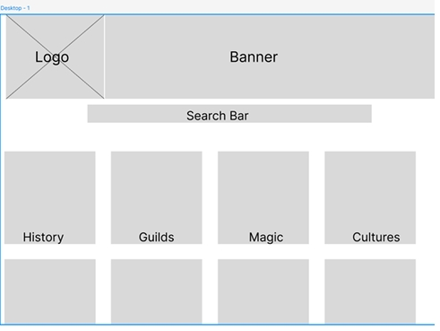

Freelance Saga Wiki Style Guide
This page documents the actual design choices used in the current build of the site.
Updated PWP Plan Content
Project Name: Federation of Alterra Database
Site Title: Freelance Saga Wiki
Audience: People interested in using the setting for a game they are running. A secondary audience is publishers or employers reviewing the work.
Purpose: A collection of worldbuilding created during the writing of the novel, organized for reference, inspiration, and entertainment reading.
Personality: A magitech codex that feels like an in-world Alterran archive, combining sci-fi database styling with bright neon cyberpunk energy.
Comparable Sites: World Anvil, Critical Role Fandom, and Bulbapedia.
Features/Content: Culture writeups, history, magic system details, guild progressions, character profiles, maps, charts, commissioned art, and interactive storytelling elements.
Color Palette
| Name | Hex | RGB | Color Chip | Use |
|---|---|---|---|---|
| Void Black | #111827 | 17, 24, 39 | Main background | |
| Deep Archive | #0B1220 | 11, 18, 32 | Header/footer background | |
| Codex Panel | #1E293B | 30, 41, 59 | Cards and content panels | |
| Rift Blue | #3B82F6 | 59, 130, 246 | Links, buttons, borders | |
| Mana Cyan | #22D3EE | 34, 211, 238 | Site title, highlights, hover glow | |
| Crystal Violet | #8B5CF6 | 139, 92, 246 | Section headers and accents | |
| Ember Gold | #F59E0B | 245, 158, 11 | Callouts and focus states | |
| Verdant Glow | #10B981 | 16, 185, 129 | Nature/healing accents | |
| Federation Silver | #D1D5DB | 209, 213, 219 | Body text |
Styling Descriptions
| Area | Styling Description |
|---|---|
| Overall Page | Dark magitech background, readable sans-serif font, 16px base text, 1.6 line-height, responsive width, and high contrast text. |
| Header | Centered identity section with glowing cyan title, dark archive background, and cyan border. |
| Navigation | Sticky flexbox navigation with rounded hover effects, glowing focus states, and consistent links on every page. |
| Main | Centered content container with hero sections, panels, responsive cards, and wiki-style entries. |
| Footer | Centered copyright and licensing note with dark background and violet top border. |
Layout Sketch
A figma wireframe of the general page layout of the site.

Graphic and Image Licensing
| File | Use | License |
|---|---|---|
| images/graphics/UCLogo.png | Home page archive emblem | Comissioned graphic; copyright owned by site creator. |
| images/graphics/map.png | Cultures page abstract map | Self-created original graphic via 'Norantis'; copyright owned by site creator. |
| images/sketches/layout.jpeg | Style guide Figma sketch | Self-created original graphic; copyright owned by site creator. |